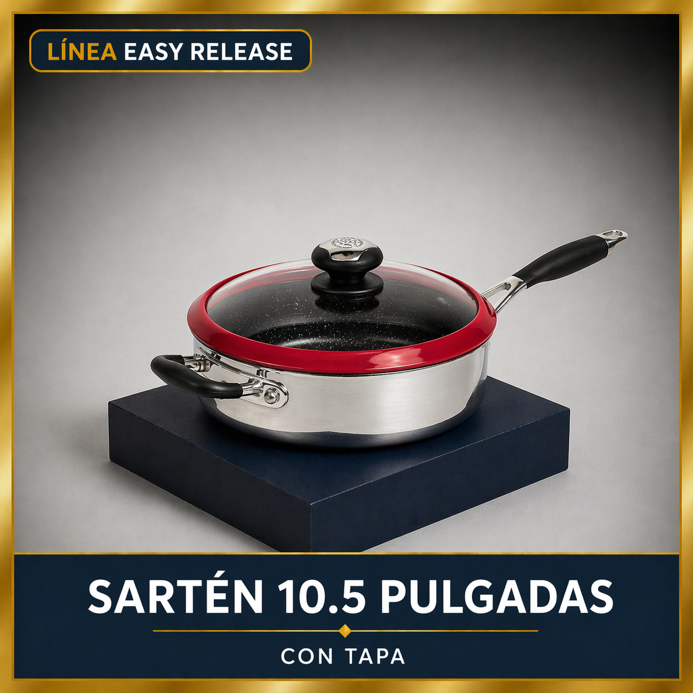
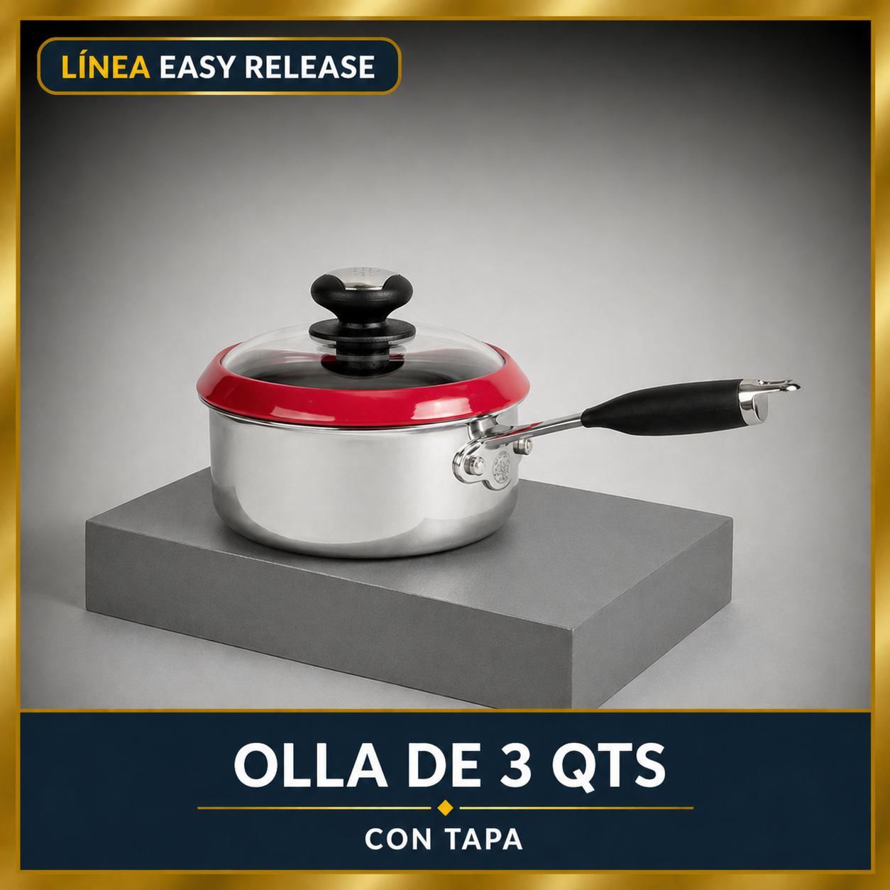
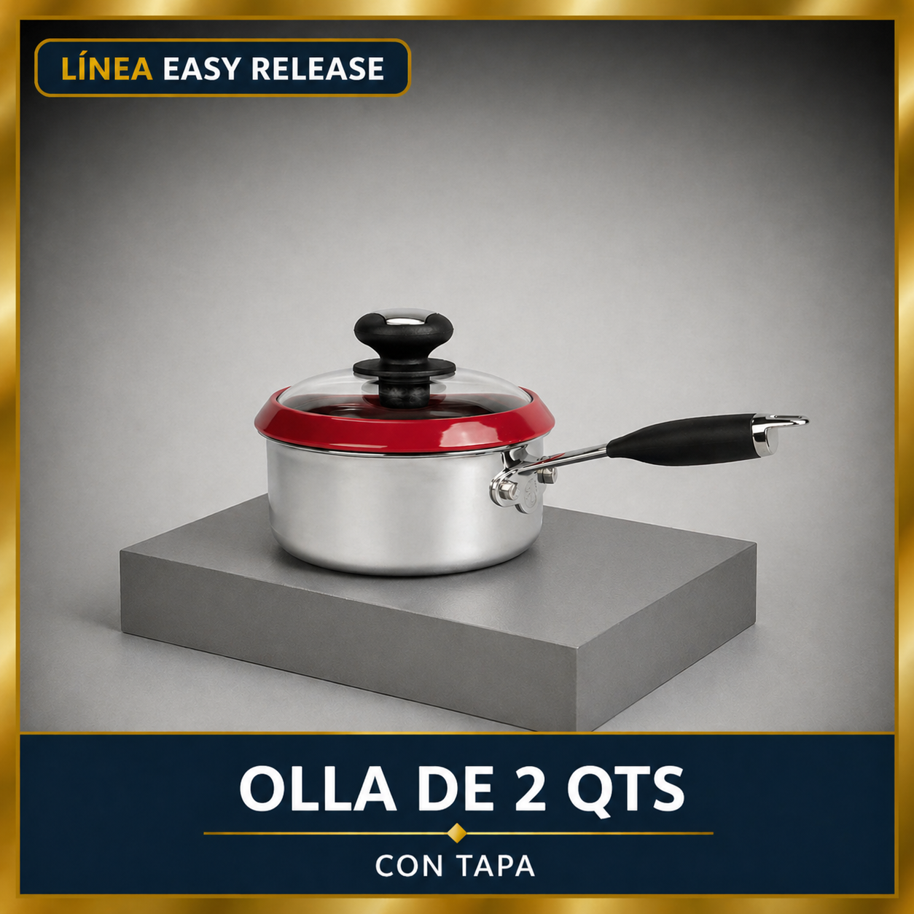

Sartén profundo de 10.5 pulgadas
Muy útil para preparaciones que requieren mayor capacidad que un sartén convencional, como salteados más abundantes, guisos rápidos y recetas con salsas.
Medida del set: 10.5 pulgadas.

Una combinación práctica de sartén profundo y dos ollas con tapa, pensada para brindar versatilidad en la cocina diaria con piezas funcionales para distintas preparaciones.
Este sistema combina una configuración compacta y útil para recetas cotidianas, permitiendo cocinar, hervir, calentar y preparar diferentes porciones en un mismo juego.
El set de Ollas y Sartén Easy Release reúne tres piezas principales para cubrir necesidades frecuentes de la cocina diaria en un formato práctico y bien equilibrado.
Su combinación de sartén profundo, olla de 3 cuartos y olla de 2 cuartos permite preparar desde salteados y guisos hasta sopas, salsas y porciones medianas o pequeñas con mayor comodidad.
Es una opción útil para quienes desean un juego compacto con piezas variadas, pensado para adaptarse mejor a distintas recetas sin necesidad de un sistema demasiado grande.
Este set está compuesto por tres piezas principales y sus respectivas tapas, para un total de 6 piezas.

Muy útil para preparaciones que requieren mayor capacidad que un sartén convencional, como salteados más abundantes, guisos rápidos y recetas con salsas.
Medida del set: 10.5 pulgadas.

Adecuada para porciones medianas, sopas, cremas, pastas, frijoles, salsas o acompañamientos que necesitan una capacidad intermedia.
Capacidad del set: 3 qt.

Ideal para porciones pequeñas, calentados, salsas, arroz, verduras y preparaciones más controladas de uso frecuente.
Capacidad del set: 2 qt.
El set reúne una pieza profunda y dos ollas de distinta capacidad, ofreciendo una distribución útil para múltiples recetas cotidianas.
Es una configuración bien pensada para quienes quieren piezas funcionales sin pasar a sistemas más grandes o más extensos.
Permite cubrir tareas de cocción frecuentes como hervir, calentar, preparar salsas, cocinar acompañamientos o trabajar recetas de sartén profundo.
Cada pieza cumple una función diferente dentro de la cocina, lo que facilita elegir la capacidad más adecuada según la receta y la porción.
¿Quieres seguir explorando esta línea y conocer el resto de las opciones disponibles? Abre el catálogo Easy Release o vuelve a la línea para revisar sus configuraciones principales.
Escríbenos y te ayudamos a identificar si este juego de ollas y sartén Easy Release es la opción ideal para tu cocina, tu espacio y tu forma de preparar cada receta.